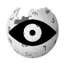

Creative Commons – Attribution (CC BY 3.0)
Eye designed by Edward Boatman from the Noun ProjectCreative Commons – Attribution (CC BY 3.0)
Blind designed by Dmitry Baranovskiy from the Noun Project

This work, "wikiPreview Logo" is a derivative of Wikipedia Logo v2 and "Eye" designed by Edward Boatman from the Noun Project, used under CC BY. "wikiPreview Logo" is licensed under CC BY by Joel Cornett.